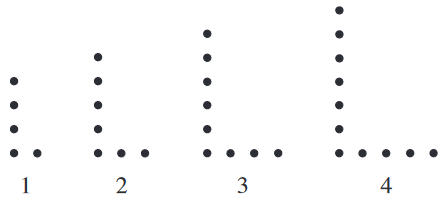

During one of their routines, the Longsboro High School marching band members line up in a succession of L-shaped formations. The first 4 formations, numbers 1 through 4, are shown below, with each dot representing a band member. The pattern demonstrated by the addition of band members in the first 4 formations continues through each successive L-shaped formation in the routine. Which of the following equations gives the relationship between \(n\), the formation number, and \(b\), the number of band members in that formation?
